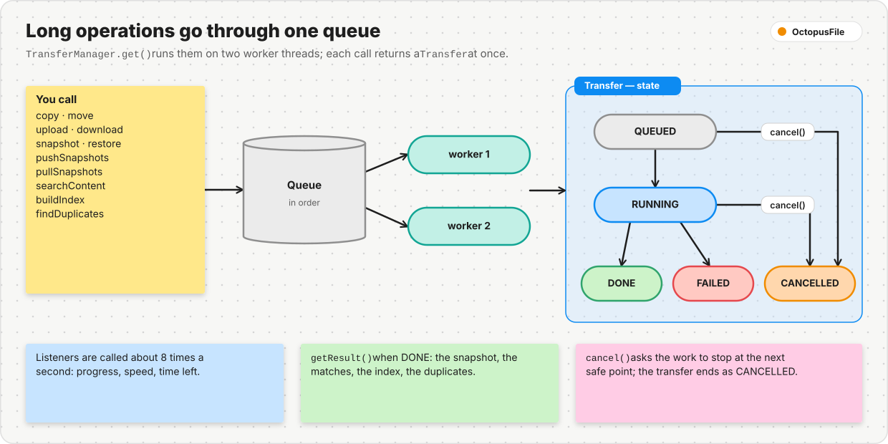
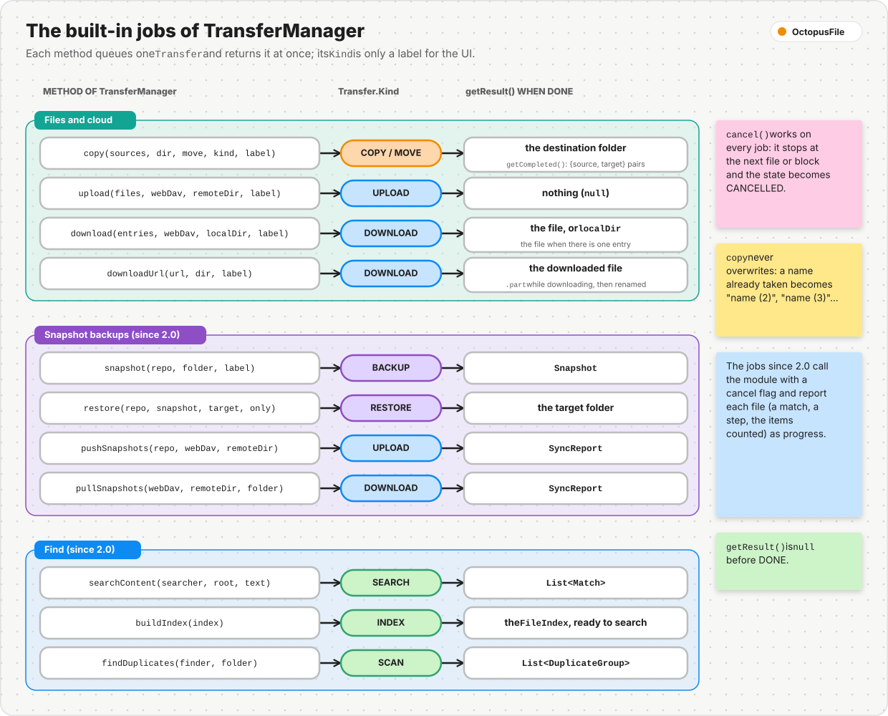
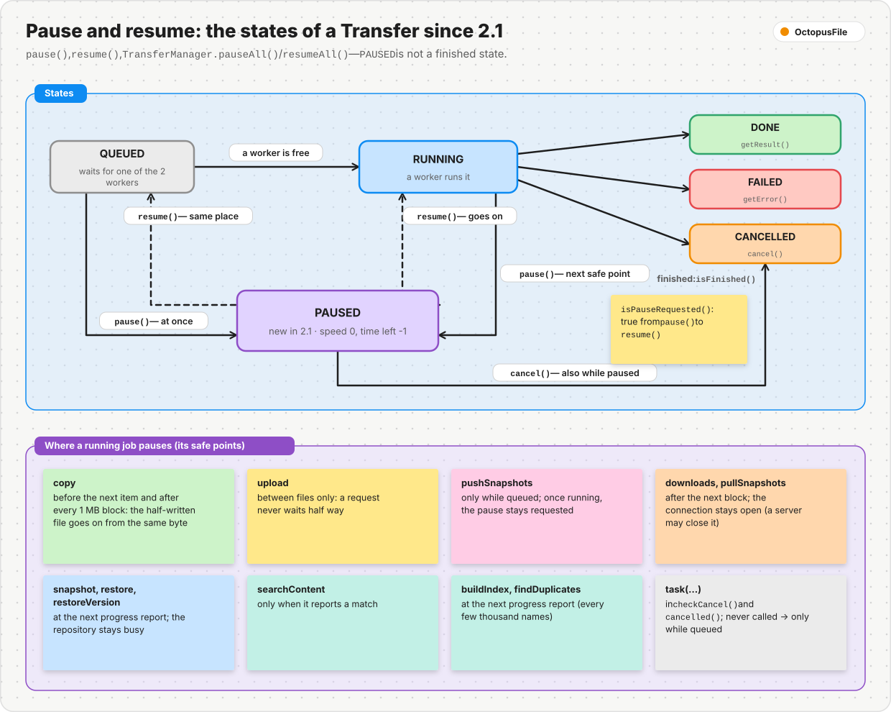
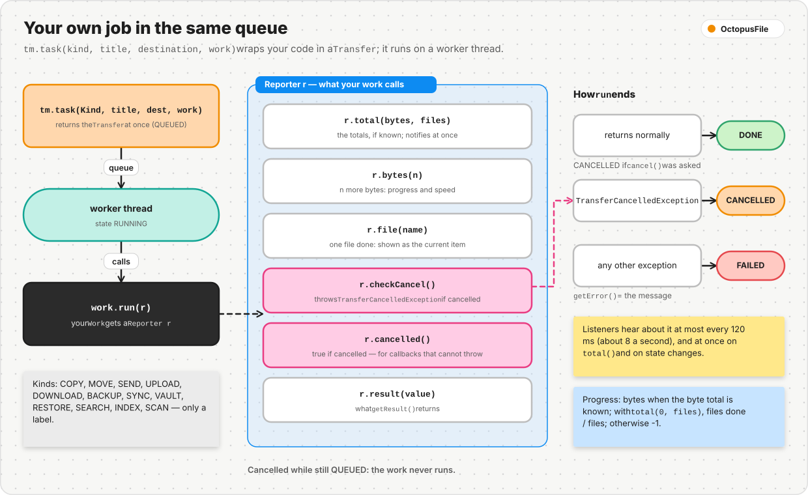

Transfers: progress, speed, time left, cancel

TransferManager is a queue (2 workers) for anything that takes time. Each job is a Transfer with bytes and files done, speed (moving average), estimated time left, state and a cancel() method.
javaTransferManager tm = TransferManager.get();
tm.addListener(t -> {
if (t != null && !t.isFinished()) {
double f = t.getFraction(); // -1 while the total is still unknown
String done = f < 0 ? "..." : String.format("%.0f%%", f * 100);
System.out.printf("%s %s %,d B/s%n", t.getTitle(), done, (long) t.getSpeed());
}
});
Transfer t = tm.copy(List.of(src), dest, false, null, "Videos");
// t.cancel() stops it; when it ends: t.getState() == DONE, FAILED or CANCELLED
Listeners are called from the worker threads, at most about 8 times per second per transfer and on every state change. In a UI, hand the notification to the UI thread (Platform.runLater, SwingUtilities.invokeLater).
Built-in jobs#

| Method | Job |
|---|---|
copy(sources, dir, move, kind, label) | local copy or move; free names, never overwrites; getCompleted() lists {source, target} pairs (for undo) |
upload(files, webDav, remoteDir, label) | upload to a WebDAV cloud |
download(entries, webDav, localDir, label) | download from WebDAV |
downloadUrl(url, dir, label) | download from the internet into a .part file, renamed when complete |
snapshot(repo, folder, label) | a snapshot backup; result: the Snapshot (since 2.0) |
restore(repo, snapshot, target, only) | restore a snapshot into an empty folder (since 2.0) |
restoreVersion(repo, version, target) | restore one version of a file to a new file; result: the target path (since 2.1) |
pushSnapshots(repo, webDav, remoteDir) / pullSnapshots(webDav, remoteDir, folder) | copy a snapshot repository to a cloud and back; result: the SyncReport (since 2.0) |
searchContent(searcher, root, text) | search inside files; result: the List<Match> (since 2.0) |
buildIndex(index) | build a name index; result: the FileIndex (since 2.0) |
findDuplicates(finder, folder) | duplicate files; result: the List<DuplicateGroup> (since 2.0) |
getResult() gives the result once the state is DONE; cancel() stops each of them at the next file.
Pause and resume (since 2.1)#

javat.pause(); // queued: PAUSED at once, takes no worker; running: PAUSED at its next safe point
t.resume(); // back to QUEUED (same place in the queue) or RUNNING (from where it stopped)
tm.pauseAll(); // every transfer in the list; tm.resumeAll() lifts them all
long active = t.getFinishedAt() - t.getStartedAt() - t.getPausedMillis();
A queued transfer that is paused keeps its place, and the next one runs instead. A running one pauses at a safe point (where it also checks for cancel) and keeps its worker and what it has done. isPauseRequested() is true from pause() to resume(); getState() becomes PAUSED only once the work really waits. While paused, the speed is 0, the time left is -1 and the paused time is not counted. cancel() also works on a paused transfer. The listeners are told when the state becomes PAUSED and when it goes back.
| Job | Pauses while running |
|---|---|
copy | before the next item and after every 1 MB block; the half-written file goes on from the same byte (a move inside one volume is a rename: not paused half way) |
upload, pushSnapshots | upload between files only; pushSnapshots only while queued (a request never waits half way: the pause stays requested and the push goes to the end) |
download, downloadUrl, pullSnapshots | after the next block received; the connection is held open, and a server that closes it during a long pause makes the transfer fail |
snapshot, restore, restoreVersion | at the next progress report; the repository stays busy, so other operations on it wait for the resume or the cancel |
searchContent | only when it reports a match |
buildIndex, findDuplicates | at the next progress report (every few thousand names; between the phases of a scan) |
task(...) | in checkCancel() and cancelled(); a task that never calls them pauses only while queued |
Compatibility: PAUSED is a new constant of Transfer.State. A switch over the state with no default should get a PAUSED case; isFinished() is false while paused.
Your own jobs#

javaTransfer custom = tm.task(Transfer.Kind.COPY, "Thumbnails", "cache", r -> {
r.total(3, 3); // bytes, files (if known)
for (int i = 0; i < 3; i++) {
r.checkCancel(); // throws TransferCancelledException when cancelled
r.bytes(1);
r.file("thumb-" + i);
}
});
Kinds: COPY, MOVE, SEND, UPLOAD, DOWNLOAD, BACKUP, SYNC, VAULT, and since 2.0 RESTORE, SEARCH, INDEX, SCAN (only a label for the UI).
DocExamplesTest